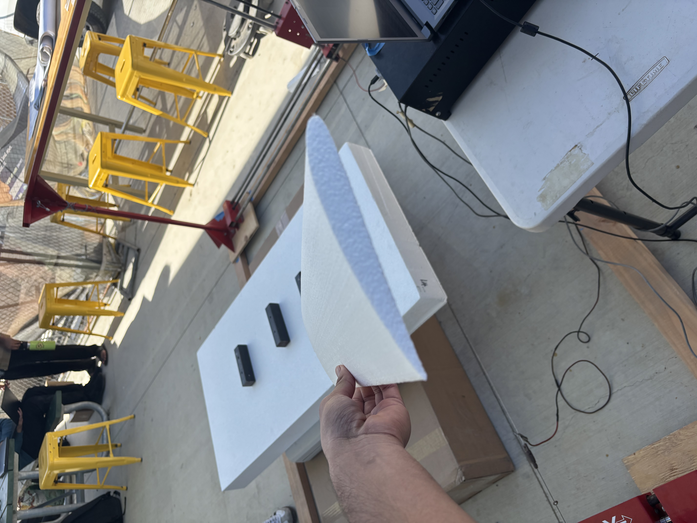
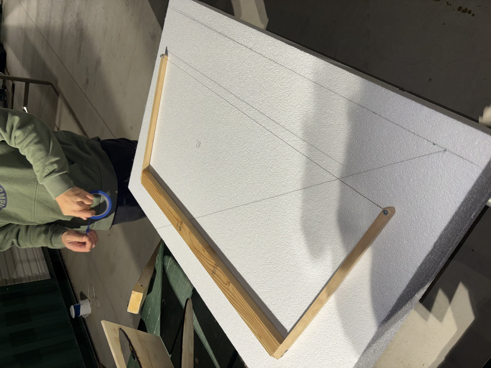
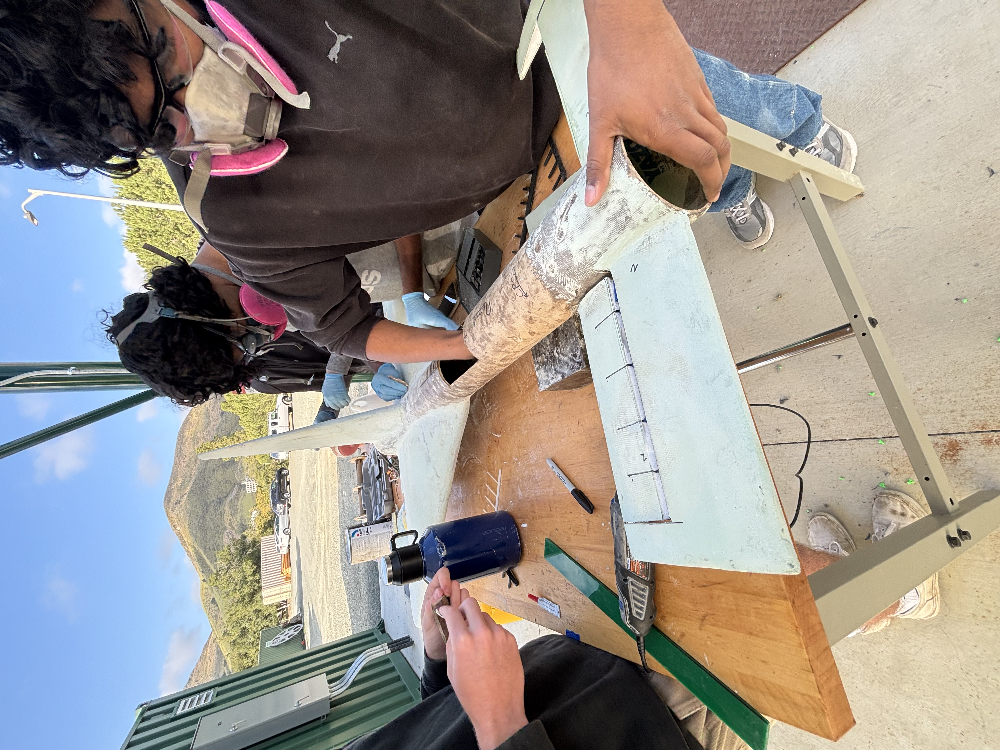
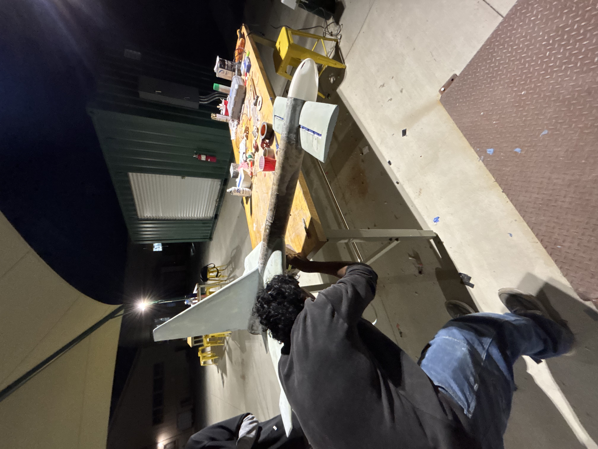

Booster and Center Stage Projects
On Cal Poly Space Systems, I contributed to aerodynamic structures, flight hardware, manufacturing, assembly, and post-flight analysis. I currently lead center stage work for a full shuttle configuration with two boosters and a center stage.
Vertical Stabilizer
I developed aerodynamic control surface geometry in SolidWorks and translated the 3D design into manufacturable 2D toolpaths. I used DevFoam and Mach3 to generate and validate G-code for CNC hot-wire foam cutting, tuning feed rate, wire temperature, and axis alignment to preserve the airfoil geometry.


Canard Wing
I designed and fabricated wing canards for the booster, using custom airfoil profiles and manufacturing constraints to guide the design. I also designed and built a manual hot-wire cutting apparatus with a rigid aligned frame, applying heat-transfer considerations to improve cut quality and reduce burn-through or material weakening.



Booster Assembly
I helped manufacture and assemble the booster by cutting foam components, integrating canards, vertical stabilizers, fuselage sections, and nose cone components, and applying multiple fiberglass layups. I also supported finishing work including Bondo layers, sanding, painting, motor assembly, wiring, actuator troubleshooting, launch preparation, and post-flight failure analysis.





Camera Fairing
I designed a lightweight camera fairing to mount and protect onboard imaging hardware during flight. The part was designed around the fuselage curvature and camera dimensions, then iterated through multiple printed prototypes. The final design included holes and slots to improve airflow after heat buildup was identified as a concern.


Booster Separation Mechanism
As Center Stage Team Lead, I am leading research and concept development for the booster separation mechanism. My team is evaluating multiple approaches, including an explosive pin concept, explosive bolt testing, and an electromagnetic system. I am currently overseeing 3D-printed test models and a jig-and-pin setup used to study separation angle and required separation force before final mechanism manufacturing.